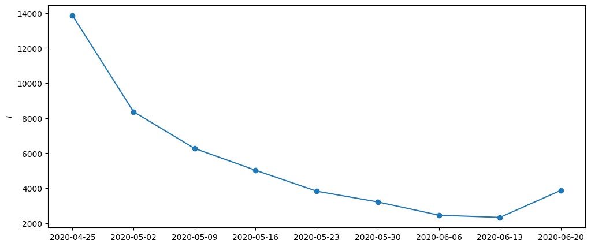
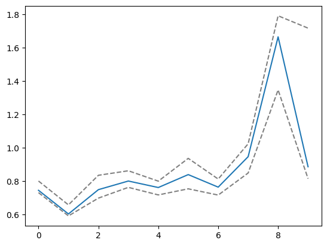
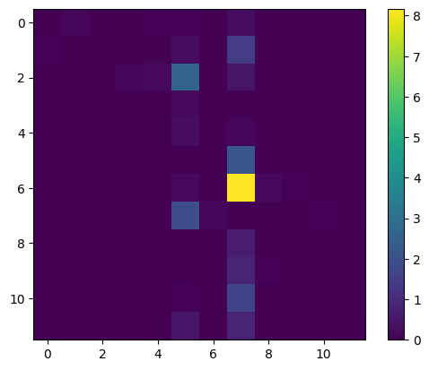

from ssm4epi.models.regional_growth_factor import (
key,
n_iterations,
N_mle,
N_meis,
N_posterior,
percentiles_of_interest,
make_aux,
dates_full,
cases_full,
n_ij,
n_tot,
n_pop,
account_for_nans,
growth_factor_model,
)
import jax.numpy as jnp
import jax
import jax.random as jrn
from isssm.importance_sampling import prediction
from isssm.laplace_approximation import laplace_approximation as LA
from isssm.modified_efficient_importance_sampling import (
modified_efficient_importance_sampling as MEIS,
)
from pyprojroot.here import here
jax.config.update("jax_enable_x64", True)
from isssm.estimation import initial_theta
import pickle
import matplotlib.pyplot as pltApplication 1: Showcase
Imports
Parameters
# parameters
N_ITER_LA = 100
N_MAX_ITER_THETA0 = 10
N_MLE = 10_000
N_MLE_TEXT = f"{N_MLE:,}".replace(",", "\\,")
N_MAX_ITER_MLE = 100
N_PRED = 10_000text_parameters = f"""As hyperparameters for the showcase, we use ${N_ITER_LA}$ iterations for the LA, a maximum of ${N_MAX_ITER_THETA0}$ iterations for the optimization of $\\theta_0$ in the LA, ${N_MLE_TEXT}$ samples and a maximum of ${N_MAX_ITER_MLE}$ iterations for the estimation of $\\hat\\theta$, and ${N_PRED}$ samples for the prediction. These values have been chosen by hand to balance computational cost and accuracy.
"""
with open(
here(
"./chapters/04_epidemiological_ssms/04_02_weekly_GF_showcase_hyperparameter_text.tex"
),
"w",
) as f:
f.write(text_parameters)Missing model
from datetime import date
import pandas as pd
initial_date = "2020-04-18"
np1 = 10
(dates_index,) = jnp.where(dates_full == initial_date)[0]
dates = dates_full[dates_index + 1 : dates_index + np1 + 1]
aux = make_aux(initial_date, cases_full, n_ij, n_tot, np1)
y = aux[0][1:]
y_nan = y.at[-1].set(jnp.nan)
missing_inds = jnp.isnan(y_nan)
# original result from 10_model.ipynb
theta_manual = jnp.array(
[-0.0236392, -2.0838978, -5.31651543, -2.62109273, -0.3461143, 0.57673125]
)
_, y_miss = account_for_nans(
growth_factor_model(theta_manual, aux), y_nan, missing_inds
)
_model_miss = lambda theta, aux: account_for_nans(
growth_factor_model(theta, aux), y_nan, missing_inds
)[0]plt.figure(figsize=(12, 5))
plt.ylabel("$I$")
plt.plot(dates, y_nan.sum(axis=-1))
plt.scatter(dates, y_nan.sum(axis=-1))
plt.show()
Initial value \(\theta_0\)
theta0_result = initial_theta(
y_miss,
_model_miss,
theta_manual,
aux,
n_iter_la=N_ITER_LA,
options={"maxiter": N_MAX_ITER_THETA0},
)
theta0 = theta0_result.xfrom ssm4epi.models.regional_growth_factor import theta_to_par
import jax.scipy as jsp
jsp.special.expit(theta0[0]) * 2 - 1Array(-0.01538746, dtype=float64)Maximum Likelihood estimate \(\hat \theta\)
Reimplement MLE from ISSSM to only use LA.
from isssm.laplace_approximation import laplace_approximation
from isssm.estimation import pgnll
from scipy.optimize import minimize as minimize_scipy
from jaxtyping import Float, Array
from jax import jit
def mle_pgssm(
y: Float[Array, "n+1 p"], # observations $y_t$
model_fn, # parameterized LCSSM
theta0: Float[Array, "k"], # initial parameter guess
aux, # auxiliary data for the model
n_iter_la: int, # number of LA iterations
N: int, # number of importance samples
key: Array, # random key
options=None, # options for the optimizer
) -> Float[Array, "k"]: # MLE
"""Maximum Likelihood Estimation for PGSSMs"""
@jit
def f(theta, key):
model = model_fn(theta, aux)
proposal_la, _ = laplace_approximation(y, model, n_iter_la)
key, subkey = jrn.split(key)
# improve numerical stability by dividing by number of observations
n_obs = y.size
return pgnll(y, model, proposal_la.z, proposal_la.Omega, N, subkey) / n_obs
key, subkey = jrn.split(key)
result = minimize_scipy(
f, theta0, method="BFGS", jac="3-point", options=options, args=(subkey,)
)
return result
theta_result = mle_pgssm(
y_miss,
_model_miss,
theta0,
aux,
n_iter_la=N_ITER_LA,
N=N_MLE,
key=key,
options={"maxiter": N_MAX_ITER_MLE},
)
theta = theta_result.x
theta_result--------------------------------------------------------------------------- KeyboardInterrupt Traceback (most recent call last) Cell In[8], line 38 32 result = minimize_scipy( 33 f, theta0, method="BFGS", jac="3-point", options=options, args=(subkey,) 34 ) 35 return result ---> 38 theta_result = mle_pgssm( 39 y_miss, 40 _model_miss, 41 theta0, 42 aux, 43 n_iter_la=N_ITER_LA, 44 N=N_MLE, 45 key=key, 46 options={"maxiter": N_MAX_ITER_MLE}, 47 ) 48 theta = theta_result.x 49 theta_result Cell In[8], line 32, in mle_pgssm(y, model_fn, theta0, aux, n_iter_la, N, key, options) 29 return pgnll(y, model, proposal_la.z, proposal_la.Omega, N, subkey) / n_obs 31 key, subkey = jrn.split(key) ---> 32 result = minimize_scipy( 33 f, theta0, method="BFGS", jac="3-point", options=options, args=(subkey,) 34 ) 35 return result File ~/workspace/work/phd/thesis/.venv/lib/python3.10/site-packages/scipy/optimize/_minimize.py:733, in minimize(fun, x0, args, method, jac, hess, hessp, bounds, constraints, tol, callback, options) 731 res = _minimize_cg(fun, x0, args, jac, callback, **options) 732 elif meth == 'bfgs': --> 733 res = _minimize_bfgs(fun, x0, args, jac, callback, **options) 734 elif meth == 'newton-cg': 735 res = _minimize_newtoncg(fun, x0, args, jac, hess, hessp, callback, 736 **options) File ~/workspace/work/phd/thesis/.venv/lib/python3.10/site-packages/scipy/optimize/_optimize.py:1419, in _minimize_bfgs(fun, x0, args, jac, callback, gtol, norm, eps, maxiter, disp, return_all, finite_diff_rel_step, xrtol, c1, c2, hess_inv0, **unknown_options) 1416 pk = -np.dot(Hk, gfk) 1417 try: 1418 alpha_k, fc, gc, old_fval, old_old_fval, gfkp1 = \ -> 1419 _line_search_wolfe12(f, myfprime, xk, pk, gfk, 1420 old_fval, old_old_fval, amin=1e-100, 1421 amax=1e100, c1=c1, c2=c2) 1422 except _LineSearchError: 1423 # Line search failed to find a better solution. 1424 warnflag = 2 File ~/workspace/work/phd/thesis/.venv/lib/python3.10/site-packages/scipy/optimize/_optimize.py:1155, in _line_search_wolfe12(f, fprime, xk, pk, gfk, old_fval, old_old_fval, **kwargs) 1141 """ 1142 Same as line_search_wolfe1, but fall back to line_search_wolfe2 if 1143 suitable step length is not found, and raise an exception if a (...) 1150 1151 """ 1153 extra_condition = kwargs.pop('extra_condition', None) -> 1155 ret = line_search_wolfe1(f, fprime, xk, pk, gfk, 1156 old_fval, old_old_fval, 1157 **kwargs) 1159 if ret[0] is not None and extra_condition is not None: 1160 xp1 = xk + ret[0] * pk File ~/workspace/work/phd/thesis/.venv/lib/python3.10/site-packages/scipy/optimize/_linesearch.py:93, in line_search_wolfe1(f, fprime, xk, pk, gfk, old_fval, old_old_fval, args, c1, c2, amax, amin, xtol) 89 return np.dot(gval[0], pk) 91 derphi0 = np.dot(gfk, pk) ---> 93 stp, fval, old_fval = scalar_search_wolfe1( 94 phi, derphi, old_fval, old_old_fval, derphi0, 95 c1=c1, c2=c2, amax=amax, amin=amin, xtol=xtol) 97 return stp, fc[0], gc[0], fval, old_fval, gval[0] File ~/workspace/work/phd/thesis/.venv/lib/python3.10/site-packages/scipy/optimize/_linesearch.py:170, in scalar_search_wolfe1(phi, derphi, phi0, old_phi0, derphi0, c1, c2, amax, amin, xtol) 167 maxiter = 100 169 dcsrch = DCSRCH(phi, derphi, c1, c2, xtol, amin, amax) --> 170 stp, phi1, phi0, task = dcsrch( 171 alpha1, phi0=phi0, derphi0=derphi0, maxiter=maxiter 172 ) 174 return stp, phi1, phi0 File ~/workspace/work/phd/thesis/.venv/lib/python3.10/site-packages/scipy/optimize/_dcsrch.py:256, in DCSRCH.__call__(self, alpha1, phi0, derphi0, maxiter) 254 alpha1 = stp 255 phi1 = self.phi(stp) --> 256 derphi1 = self.derphi(stp) 257 else: 258 break File ~/workspace/work/phd/thesis/.venv/lib/python3.10/site-packages/scipy/optimize/_linesearch.py:87, in line_search_wolfe1.<locals>.derphi(s) 86 def derphi(s): ---> 87 gval[0] = fprime(xk + s*pk, *args) 88 gc[0] += 1 89 return np.dot(gval[0], pk) File ~/workspace/work/phd/thesis/.venv/lib/python3.10/site-packages/scipy/optimize/_differentiable_functions.py:332, in ScalarFunction.grad(self, x) 330 if not np.array_equal(x, self.x): 331 self._update_x(x) --> 332 self._update_grad() 333 return self.g File ~/workspace/work/phd/thesis/.venv/lib/python3.10/site-packages/scipy/optimize/_differentiable_functions.py:307, in ScalarFunction._update_grad(self) 305 if self._orig_grad in FD_METHODS: 306 self._update_fun() --> 307 self.g = self._wrapped_grad(self.x, f0=self.f) 308 self.g_updated = True File ~/workspace/work/phd/thesis/.venv/lib/python3.10/site-packages/scipy/optimize/_differentiable_functions.py:48, in _wrapper_grad.<locals>.wrapped1(x, f0) 46 def wrapped1(x, f0=None): 47 ncalls[0] += 1 ---> 48 return approx_derivative( 49 fun, x, f0=f0, **finite_diff_options 50 ) File ~/workspace/work/phd/thesis/.venv/lib/python3.10/site-packages/scipy/optimize/_numdiff.py:523, in approx_derivative(fun, x0, method, rel_step, abs_step, f0, bounds, sparsity, as_linear_operator, args, kwargs) 520 use_one_sided = False 522 if sparsity is None: --> 523 return _dense_difference(fun_wrapped, x0, f0, h, 524 use_one_sided, method) 525 else: 526 if not issparse(sparsity) and len(sparsity) == 2: File ~/workspace/work/phd/thesis/.venv/lib/python3.10/site-packages/scipy/optimize/_numdiff.py:608, in _dense_difference(fun, x0, f0, h, use_one_sided, method) 606 x2[i] += h[i] 607 dx = x2[i] - x1[i] --> 608 f1 = fun(x1) 609 f2 = fun(x2) 610 df = f2 - f1 File ~/workspace/work/phd/thesis/.venv/lib/python3.10/site-packages/scipy/optimize/_numdiff.py:474, in approx_derivative.<locals>.fun_wrapped(x) 471 if xp.isdtype(x.dtype, "real floating"): 472 x = xp.astype(x, x0.dtype) --> 474 f = np.atleast_1d(fun(x, *args, **kwargs)) 475 if f.ndim > 1: 476 raise RuntimeError("`fun` return value has " 477 "more than 1 dimension.") File ~/workspace/work/phd/thesis/.venv/lib/python3.10/site-packages/scipy/optimize/_differentiable_functions.py:25, in _wrapper_fun.<locals>.wrapped(x) 23 if not np.isscalar(fx): 24 try: ---> 25 fx = np.asarray(fx).item() 26 except (TypeError, ValueError) as e: 27 raise ValueError( 28 "The user-provided objective function " 29 "must return a scalar value." 30 ) from e KeyboardInterrupt:
fitted_model = _model_miss(theta, aux)proposal_la, info_la = LA(y_miss, fitted_model, N_ITER_LA, eps=1e-5)from isssm.importance_sampling import ess_pct, pgssm_importance_sampling
_, log_weights = pgssm_importance_sampling(
y_miss, fitted_model, proposal_la.z, proposal_la.Omega, N_PRED, key
)
ess_pct(log_weights) * N_PREDArray(260.10875772, dtype=float64)def f_pred(x, s, y):
y_county = y[-1]
y_tot = jnp.minimum(y_county, n_pop).sum()[None]
growth_factor = x[:, 0]
growth_factors_county = s.reshape(-1)
mean_rho_country = jnp.mean(jnp.exp(s), axis=-1)
return jnp.concatenate(
[y_tot, y_county, growth_factors_county, growth_factor, mean_rho_country]
)
key, subkey = jrn.split(key)Make predictions
key = jrn.PRNGKey(12453452)
key, subkey = jrn.split(key)
preds = prediction(
f_pred,
y_miss,
proposal_la,
fitted_model,
1_000,
subkey,
percentiles_of_interest,
growth_factor_model(theta, aux),
)ESS:31.35 %result = (theta, proposal_la, preds, dates, y)
with open(here() / "data/results/4_local_outbreak_model/results.pickle", "wb") as f:
pickle.dump(result, f)Analyze results
with open(here() / "data/results/4_local_outbreak_model/results.pickle", "rb") as f:
result = pickle.load(f)theta, proposal_la, preds, dates, y = resultfrom ssm4epi.models.regional_growth_factor import _P
import jax.scipy as jsp
logit_alpha, log_s2_r, log_s2_spat, logit_q, log_Cm1, log_r = theta
params_ser = pd.Series(
{
"alpha": jsp.special.expit(logit_alpha) * 2 - 1,
"sigma_r": jnp.sqrt(jnp.exp(log_s2_r)),
"sigma spatial": jnp.sqrt(jnp.exp(log_s2_spat)),
"q": jsp.special.expit(logit_q),
"C": jnp.exp(log_Cm1) + 1,
"r": jnp.exp(log_r),
}
)
params_ser.to_csv(
here() / "data/results/4_local_outbreak_model/estimated_parameters.csv",
header=False,
)
params_ser.apply(lambda x: f"{x:.2f}")alpha -0.22
sigma_r 0.18
sigma spatial 0.87
q 0.05
C 2.41
r 19.52
dtype: objectimport numpy as np
P = _P(params_ser.C, params_ser.q, n_ij, n_tot)
np.savetxt(
here() / "data/results/4_local_outbreak_model/showcase_P_matrix.csv", np.array(P)
)import pandas as pd
df = pd.DataFrame(
{
"variable": [
"y_total",
*[f"y_total_{c}" for c in range(1, 401)],
*[f"log_rho_{c}_{t}" for t in range(1, 11) for c in range(1, 401)],
*["log_rho" for t in range(1, 11)],
*["mean_rho" for t in range(1, 11)],
],
"c": [
0,
*range(1, 401),
*[c for t in range(1, 11) for c in range(1, 401)],
*[0 for _ in range(1, 11)],
*[0 for _ in range(1, 11)],
],
"t": [
10,
*jnp.repeat(10, 400),
*[t for t in range(1, 11) for c in range(1, 401)],
*[t for t in range(1, 11)],
*[t for t in range(1, 11)],
],
"mean": preds[0],
"sd": preds[1],
**{
f"{p * 100:.1f} %": preds[2][i, :]
for i, p in enumerate(percentiles_of_interest)
},
}
)
df["date"] = [dates[t - 1] for t in df["t"]]
df.to_csv(here("data/results/4_local_outbreak_model/showcase.csv"), index=False)Country-wide growth factor
y_actual = aux[0][:-1]
fitted_model = _model_miss(theta, aux)
def f_pred(x, s, y):
y_country = y.sum(axis=-1)
y_country_past = y_actual.sum(axis=-1)
rho_observed = y_country / y_country_past
return rho_observed
key = jrn.PRNGKey(12453452)
key, subkey = jrn.split(key)
preds = prediction(
f_pred,
y_miss,
proposal_la,
fitted_model,
N_PRED,
subkey,
percentiles_of_interest,
growth_factor_model(theta, aux),
)
df = pd.DataFrame(
{
"variable": [f"rho_observed" for t in range(1, 11)],
"t": [t for t in range(1, 11)],
"mean": preds[0],
"sd": preds[1],
**{
f"{p * 100:.1f} %": preds[2][i, :]
for i, p in enumerate(percentiles_of_interest)
},
}
)
df["date"] = [dates[t - 1] for t in df["t"]]
df.to_csv(
here("data/results/4_local_outbreak_model/showcase_rho_observed.csv"), index=False
)ESS:31.35 %# plt.plot(preds[2][11])
plt.plot(aux[0][1:].sum(axis=-1) / aux[0][:-1].sum(axis=-1))
plt.plot(preds[2][2], color="grey", linestyle="dashed")
plt.plot(preds[2][-2], color="grey", linestyle="dashed")
Gütersloh contribution to neighboring counties incidence
guetersloh_neighbor_ags = [
"05754", # Gütersloh
"03459", # Osnabrück
"03404", # Osnabrück Stadt
"05566", # Steinfurt
"05515", # Münster
"05558", # Coesfeld
"05758", # Herford
"05711", # Bielefeld
"05766", # Lippe
"05774", # Paderborn
"05974", # Soest
"05570", # Warendorf
]df_ags = pd.read_csv(here("data/processed/ags_county_dict.csv"))
df_ags["ags"] = df_ags["ags"].astype(str).str.zfill(5)
df_ags_neighbors = df_ags[df_ags["ags"].isin(guetersloh_neighbor_ags)]
neighboring_indices = df_ags_neighbors.index.to_numpy()
guetersloh_index = df_ags[df_ags["ags"] == "05754"].index.to_numpy()[0]from ssm4epi.models.regional_growth_factor import _P
def f_pred_distribution_of_cases(x, s, y):
log_rho = s[-1]
pred_cases = jnp.exp(log_rho) * y_nan[-2]
P = _P(params_ser.C, params_ser.q, n_ij, n_tot)
guetersloh_contribution = (P.T * pred_cases)[neighboring_indices][
:, neighboring_indices
]
return guetersloh_contribution.reshape(-1)key, subkey = jrn.split(key)
res = prediction(
f_pred_distribution_of_cases,
y_miss,
proposal_la,
fitted_model,
N_PRED,
subkey,
percentiles_of_interest,
growth_factor_model(theta, aux),
)ESS:574.09df_guetersloh_contrib = pd.DataFrame(
{
"t": [*jnp.repeat(10, len(res[0]))],
"mean": res[0],
"sd": res[1],
**{
f"{p * 100:.1f} %": res[2][i, :]
for i, p in enumerate(percentiles_of_interest)
},
}
)
df_guetersloh_contrib["date"] = [dates[t - 1] for t in df_guetersloh_contrib["t"]]
df_guetersloh_contrib.to_csv(
here("data/results/4_local_outbreak_model/guetersloh_distribution_cases.csv"),
index=False,
)res[2][-1] - res[2][0]Array([6.73212908e+00, 8.63652793e-01, 7.73697856e-02, 1.09639916e-02,
6.81631995e-01, 3.56302318e-01, 5.24354216e-02, 5.29234075e+00,
1.96407338e-01, 8.77265876e-03, 1.50070732e-02, 6.40926398e-03,
5.96636115e-01, 8.21259855e+00, 3.50298247e-02, 6.88414552e-03,
4.01219226e-01, 1.08278335e+00, 9.76470123e-02, 2.65663729e+01,
9.84542919e-01, 1.11872618e-02, 1.63687777e-02, 8.42236443e-03,
4.92496924e-02, 3.08783106e-02, 2.39297884e+01, 8.93555249e-01,
1.53671456e+00, 1.21265836e+01, 6.76227776e-02, 7.88301802e+00,
9.18055204e-02, 1.29503052e-02, 3.98808762e-02, 4.27060751e-02,
3.56148240e-03, 3.34114987e-03, 3.79823599e-01, 8.43886689e+00,
1.40441341e-01, 9.29755192e-01, 9.44352129e-03, 1.02534290e+00,
1.87870769e-02, 3.59850945e-03, 8.01698985e-03, 1.02524557e-02,
1.91886055e-01, 1.50752170e-01, 5.59277146e-01, 1.05124986e-01,
2.68655566e+01, 1.32199051e+00, 2.21775352e-02, 2.37401901e+00,
5.76143445e-02, 4.67166634e-03, 1.07403989e-02, 8.84938574e-03,
1.10712094e-02, 3.88064759e-02, 4.17965294e-01, 5.04643200e-02,
1.19808073e-01, 1.92894692e+02, 6.00290996e-02, 4.07846193e+01,
7.58689553e-02, 8.38938844e-03, 3.25276717e-02, 1.68677361e-01,
2.73503595e-02, 4.44354733e-02, 5.20908638e-02, 8.50681159e-03,
3.56775860e-02, 9.90966454e-01, 3.26831324e+01, 1.51772281e+02,
3.67057852e+00, 5.80382013e-01, 3.76948141e-01, 5.25885682e-02,
3.74279286e-02, 1.24087107e-01, 5.37880353e-02, 8.92406858e-03,
4.27328325e-02, 9.23596234e+00, 1.93391519e+00, 2.65316408e+03,
8.62266002e-01, 1.94275493e-01, 7.50236747e-01, 2.57741805e-01,
2.12456782e-02, 7.02812921e-02, 1.22519977e-02, 3.12883261e-03,
1.79063519e-02, 1.15484328e-01, 7.40189000e-01, 1.17842732e+01,
6.06620837e+01, 2.79629793e-01, 3.77021489e-02, 7.62932486e-03,
8.06731859e-03, 7.25237808e-03, 1.11800999e-02, 2.66521373e-03,
9.45336784e-03, 1.45284547e-01, 6.77453537e-01, 1.47787913e+01,
1.27951425e+00, 1.10458301e+01, 3.14672853e-01, 1.57427297e-02,
3.65838210e-03, 4.79464684e-03, 1.51997165e-02, 4.89058434e-03,
1.13170179e-02, 4.41675920e-01, 2.19963642e-01, 3.02542782e+01,
1.41933261e-01, 1.97188348e-01, 2.50007354e+01, 3.22039013e-01,
3.56148240e-03, 4.05468474e-03, 2.10058293e-02, 6.83778363e-03,
1.67082911e-02, 2.18861312e+00, 3.78321946e-02, 1.42301773e+01,
3.09568175e-02, 1.04590482e-02, 5.21561164e-01, 1.59825589e+01], dtype=float64)cases_dist = jnp.array(res[2][0]).reshape((12, 12))
plt.imshow(cases_dist - jnp.diag(jnp.diag(cases_dist)))
plt.colorbar()